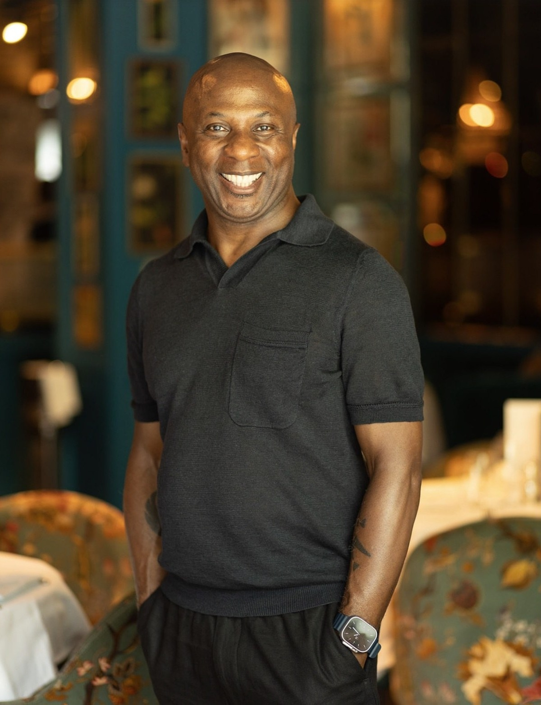
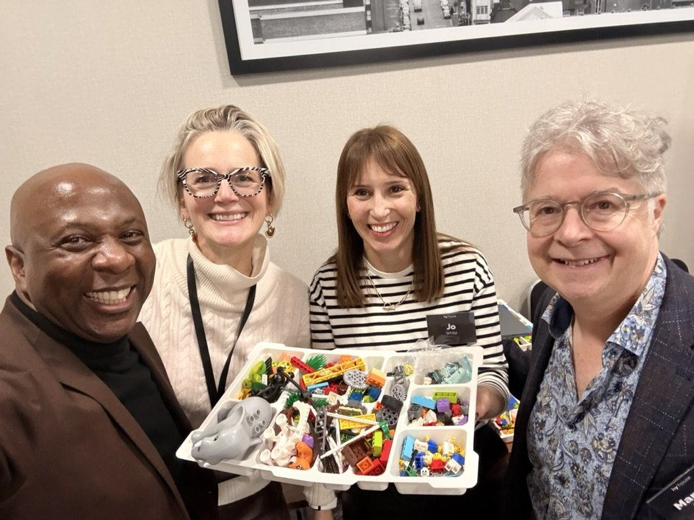
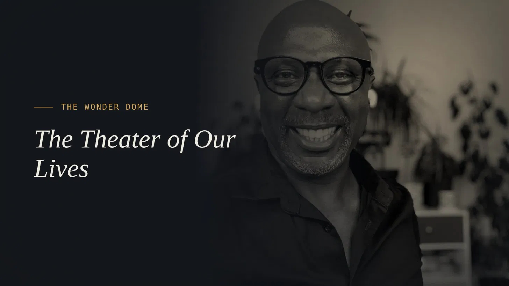

Experience
Different rooms. Different challenges. The same underlying question.
I have spent more than twenty years working with people in moments where something matters.
On stages.
In rehearsal rooms.
In coaching conversations.
With leadership teams.
Inside organisations navigating change.
The contexts are different, but much of my curiosity has remained the same.
What is really happening here? Who are we being inside it? And what becomes possible when we see it differently?


The human before the role
The person behind the leader matters.
Senior roles can make it easy to reduce people to what they are responsible for.
Targets.
Decisions.
Teams.
Boards.
Strategy.
Performance.
But leadership is always being enacted by a person. A person with history, assumptions, strengths, habits, relationships, contradictions and stories about who they need to be. That has always interested me.
I want to understand the leadership challenge in front of you, but I am equally interested in the person meeting that challenge. Not because everything needs to become personal. Because who we are being affects what we notice, what we avoid, what we allow and what becomes possible.
If I cannot see the person, I cannot fully understand the leadership.
Story · Character · Presence
I trained as an actor before I trained as a coach.
My earliest professional training was in acting and physical theatre. Story, character, motivation, relationship, movement and presence were not abstract ideas. They were the work.
You learned to pay attention.
To what was said.
To what was not.
To what changed when somebody entered the room.
To the role a person was playing.
To the story driving the action.
To what the body revealed before language caught up.
Years later, when I encountered Narrative Coaching, systemic thinking and embodied approaches to leadership, much of it felt connected to questions I had already been exploring for a long time.
That does not mean I coach people as though they are actors. It means story, character, relationship and presence have been part of how I understand people for most of my working life.
The work over time
More than twenty years of helping people see differently.
My route into executive coaching has not been linear. It has included acting and physical theatre, facilitation, leadership development, coaching, team work, organisational programmes, supervision, speaking and the development of other coaches.
Over time, the work has deepened rather than narrowed. Today I bring together more than 5,000 hours of coaching and facilitation with training across Narrative Coaching, systemic and analytic approaches, the Enneagram, embodiment, transformational coaching and leadership development.
The value is not in having a long list of tools. It is in having enough range to recognise that different moments require different ways of working.
Sometimes the most useful intervention is a question.
Sometimes a challenge.
Sometimes a framework.
Sometimes silence.
Sometimes movement.
Sometimes helping a room notice what it has been avoiding.
Experience gives you more options. It should not give you more certainty.
Professional practice
Depth matters. So does continued learning.
I am an International Coaching Federation Professional Certified Coach (PCC) and an accredited Enneagram practitioner using the iEQ9 professional assessment, with more than 5,000 hours of coaching and facilitation behind the practice.

Coaching · Teams · Facilitation
Sometimes the work is with one person. Sometimes it is with the room.
My work moves between individual leaders and the systems around them. One-to-one coaching allows us to go deeply into role, identity, judgement, relationship and choice. Team coaching allows the team itself to become the client. Facilitation allows a group to hold an important conversation, make a decision or create something together without also having to manage the process.
These are different forms of work, but they share a common discipline.
Pay attention to what is actually happening rather than forcing the situation into a predetermined model.
Organisational experience
The work has to survive contact with the real world.
Leadership does not happen in a coaching model. It happens in organisations.
With competing priorities.
Different personalities.
Commercial pressure.
Politics.
Stakeholders.
History.
Change.
And people who still need to get the work done.
I have worked with leaders and teams across a range of sectors and organisational contexts, both directly and through associate programmes.
Across direct engagements and associate programmes, my work has included leaders and teams connected to:
I work with leaders, teams and organisations internationally, online and in person by arrangement.
I also co-founded Zenith Leadership with Will Harvey, through which we deliver larger organisational leadership programmes and selected joint engagements. More about working with Robert and Zenith →
Beyond one-to-one work
Experience that reaches beyond the coaching room.



Alongside my coaching practice, I serve as a trustee of Theatre Rites.
Writing & Contribution
Story, imagination and the body have been part of my practice for a long time.
My work is included in Playfulness in Coaching: Exploring Our Untapped Potential Through Playfulness, Creativity and Imagination, by Stephanie Wheeler and Teresa Leyman, published by Routledge in 2023.
The contribution reflects themes that continue to run through my coaching today: the narratives we inhabit, the identities we construct and the relationship between story, imagination and the body.
How people experience the work
Warmth, challenge and real attention.
People sometimes imagine that serious leadership work needs to feel heavy. I do not. I take the work seriously. I pay close attention. I challenge where challenge is useful. But there is also room for humour, humanity, curiosity and play.
The aim is not to perform expertise at somebody. It is to create the conditions in which something useful can happen.
- Warmth without collusion
- Challenge without performance
- Curiosity without judgement
- Structure without rigidity
- Depth without unnecessary heaviness
- Attention to what is said and what is happening underneath it
The work can be serious without becoming solemn.
How people experience the work
What the work has made possible.
“
Robert's coaching style, listening skills and curiosity took me to a new personal level. To understand how focussing on me and my personal goals would help me in my professional life was life changing.
Alexis WardHead of Adviser Experience, Scottish Widows
“
Robert has an engaging and inspirational personality that is key to catalyzing leadership growth. He motivates those around him to set their sights higher and achieve more.
Matthew PaineGlobal Training Specialist, Siemens
“
I have been very fortunate to have had the privilege to listen to international sporting coaches, garnishing their tips, seeking their point of difference and edge. Robert Stephenson is right up there with them all. I have rarely seen connection and delivery like it.
Graeme YoungHead of People Service Delivery, Heathrow
“
Over the past 12 months Rob and Will have been hugely influential in my business, both strategically and operationally, and I can't recommend them highly enough.
Duncan CormackCEO, Cormack Advertising
Thinking in public
Ideas are part of the work too.
Coaching is not the only place I think about leadership, identity, teams and change. Writing, speaking and conversation are part of the practice too. They allow me to test ideas, notice patterns across different contexts and make some of the questions I am exploring available beyond the coaching room.
- What story are you leading from?
- What role have you learned to play?
- What happens when an old identity reaches its edge?
- What is happening in the room that nobody is naming?
- What becomes possible when we see differently?
Conversations
Some ideas need another person in the room.
If you'd rather hear how I think than read about it, these are a few conversations from podcasts and events over the years.

The Missing Piece in Leadership
No elite athlete wins alone, so why do so many leaders try to? A conversation on why leaders are quick to offer support to others and slow to ask for it themselves.

How to Say Yes and Become a Conduit for Change
With host Robbie Swale, on the path from actor to narrative coach to director of one of Europe's largest coaching schools, and what saying yes to opportunity has taught me.

Listen ↗The Theater of Our Lives
On my background in acting and mime, and the idea that we are all, in a sense, operating in a theatre of our own minds.
Start with what is happening
You do not need to arrive with a perfectly formed brief.
If something in your leadership, team or organisation needs attention, start there. Tell me what is happening. We can work out the shape of the support from the conversation.